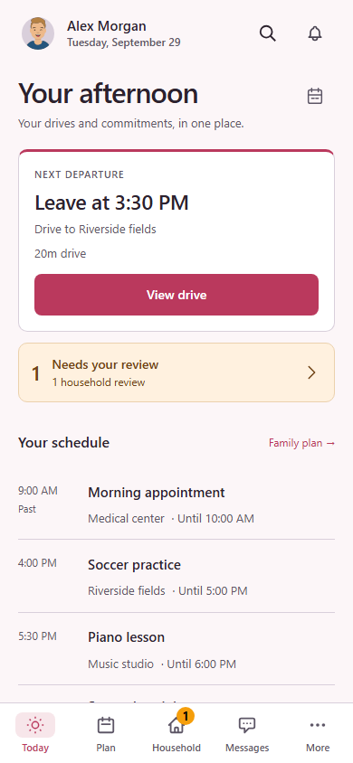
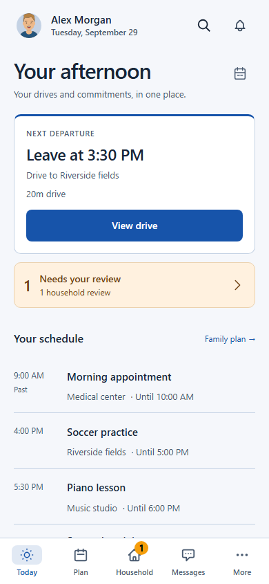
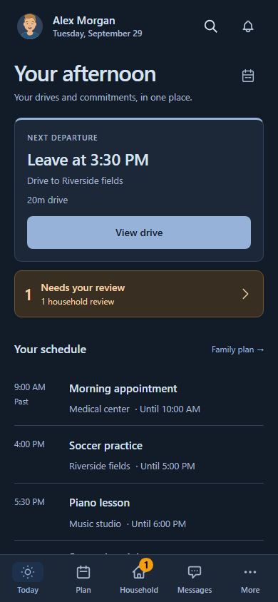
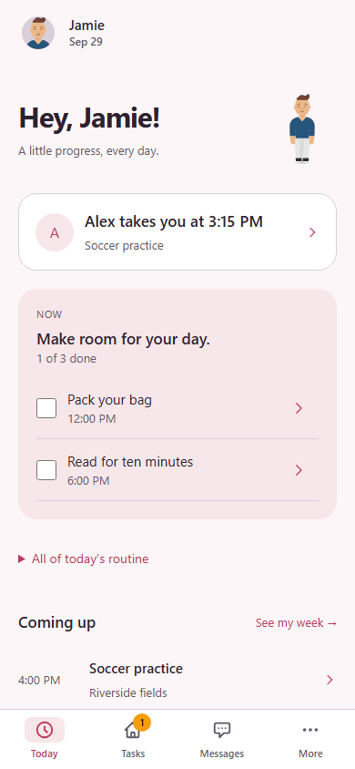
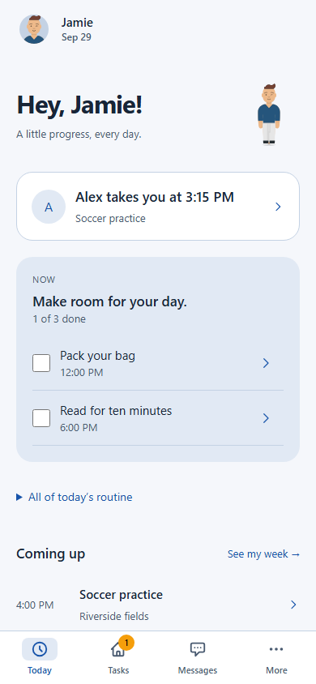
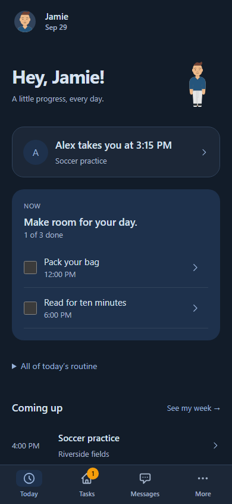

Audience design reviewYour profile color, at every stage.
Working PWA captures from version 2.499.214 with fictional data. Adults and all four child stages now use the person's profile color for accents and background tints. Stage-specific layouts remain; fixed stage colors are removed. Light and dark variants adjust brightness for readable text and controls.
Adult
Pink profile · light
Blue profile · light
Blue profile · dark
Explorer
Pink profile · light
Blue profile · light
Blue profile · dark
The browser checks exercise all ten audience profiles, switching people, both themes, and pink, blue, yellow, white, black, shorthand and invalid color inputs. Accent and primary text combinations are checked for at least 4.5:1 contrast. Semantic alerts and other people's identity colors retain their meaning.
Child layouts and sheets from 2.499.213